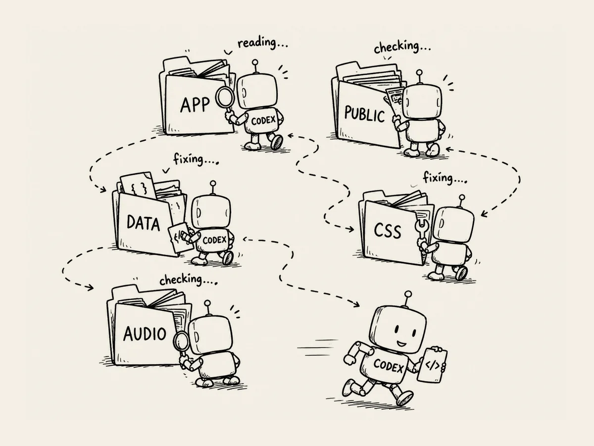

16.
Codex es como un robot aspirador.
Vaya.
Codex tenía una habilidad especial.
Me recordaba a un robot aspirador.
Recorría toda la carpeta.
ChatGPT ponía a trabajar a Codex
como un hermano mayor que manda al pequeño.
Yo le decía a ChatGPT lo que quería.
«Creo que aquí hay algo que no está bien.»
ChatGPT identificaba el problema.
Después lo convertía
en instrucciones que Codex pudiera entender.
Yo se las pasaba a Codex.
Y Codex se ponía a trabajar.
Encontraba los archivos relacionados.
Leía el código.
Lo modificaba.
También comprobaba
que no se hubiera estropeado nada más.
Yo me quedaba mirando la pantalla.
Abría un archivo,
pasaba a otro,
y volvía a cambiar algo.
Era exactamente como ver
un robot aspirador recorriendo la casa.
Yo no tenía que buscar los archivos.
Tampoco tenía que saber
dónde estaba cada parte del código.
Le dabas una tarea
y él recorría todo por su cuenta
hasta encontrar lo que necesitaba.
Claro que,
de vez en cuando,
se iba por donde no debía.
Así que cuando terminaba,
yo volvía a preguntarle a ChatGPT:
«¿Este lo ha hecho bien?»
Le pedía al hermano mayor
que revisara el trabajo del pequeño.
Pensándolo bien,
era bastante gracioso.
Yo no sabía programar.
Y aun así,
le pedía a una IA que programara
y a otra IA
que revisara su trabajo.
